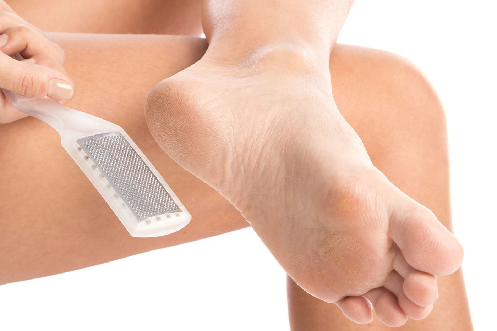
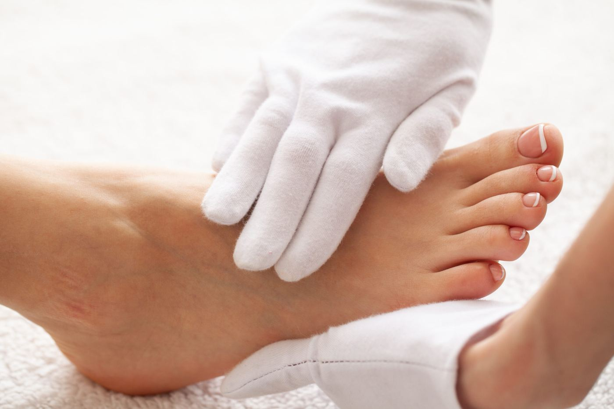
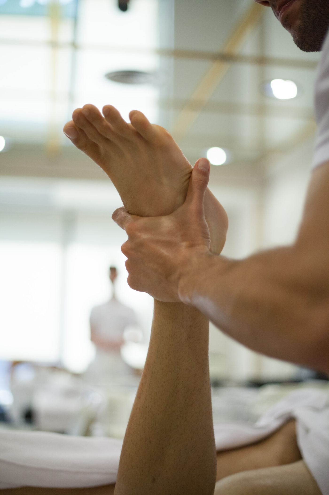

Láser-Terapia
Muchas patologías inflamatorias del pie resultan muy dolorosas y limitan las actividades diarias.
Los efectos bioestimulantes y curativos de la terapia láser son conocidos desde 1960: la luz monocromática estimula la curación y la regeneración de los tejidos, penetrando en profundidad y facilitando la regeneración tisular y la reducción del dolor y la inflamación.
En FD-Fisio disponemos de láser 980–1064 nm de última generación. Su potencia de 60 W y sus sistemas de regulación permiten variar la penetración de 1 a 15 mm, estimulando los tejidos allí donde se necesita, sin irradiar áreas no deseadas.
- Efecto antiinflamatorio: vasodilatación y activación del sistema linfático, reduciendo dolor e hinchazón.
- Efecto analgésico: bloquea la transmisión del estímulo doloroso.
- Acelera la reparación celular: forma nuevos capilares, cierra heridas y reduce el tejido cicatricial.
Otros tratamientos

Quiropodia Estética
La mejor manera de mejorar el aspecto de los pies y las uñas, siempre bajo control podológico.
Descubrir →
Quiropodia Delux
Combina la quiropodia estética con la fisioterapia podológica para el bienestar integral del pie.
Descubrir →
Fisioterapia Podológica
Un plan terapéutico diseñado a medida y dirigido exclusivamente a la recuperación del pie.
Descubrir →